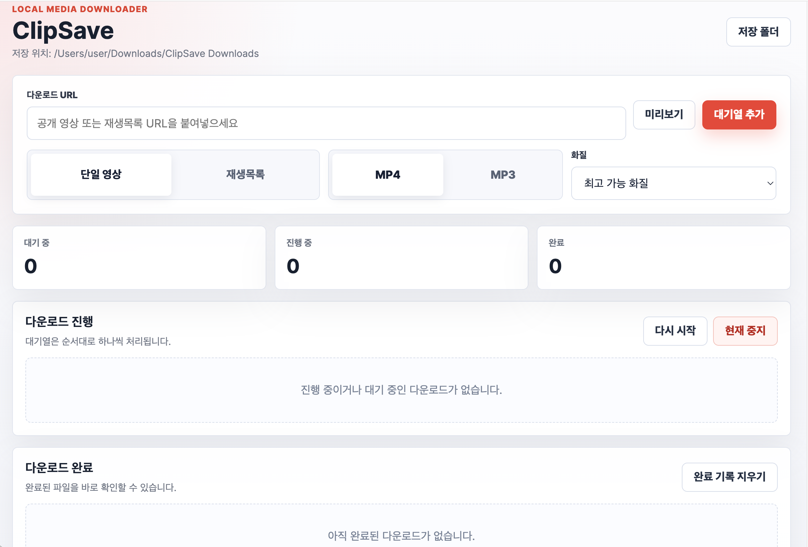
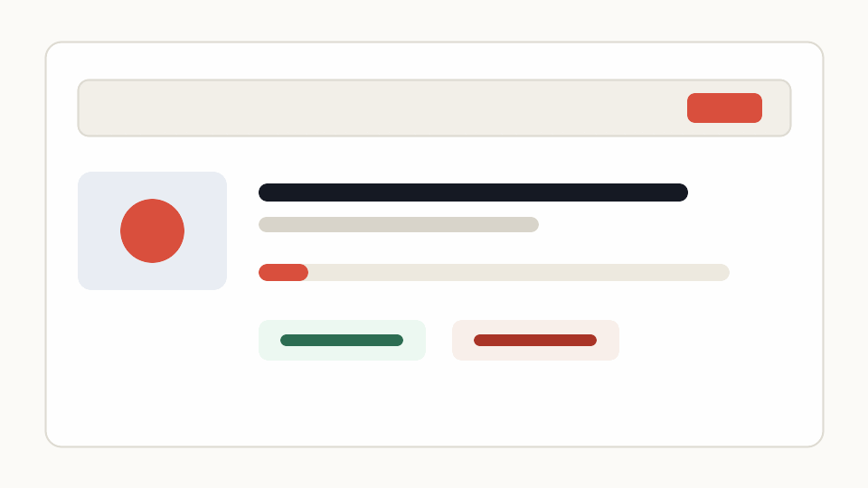

macOS
Download for Mac
For Apple Silicon Macs. Unzip, right-click the app, and choose Open on first launch if macOS warns about an unsigned app.
ClipSave-1.4.0-mac-arm64.zipSource-available desktop app
A clean Mac and Windows desktop downloader for public media. Paste a link, choose MP4 or MP3, and watch every download move through a friendly queue.
다운로드 권한이 있는 공개 영상을 MP4 또는 MP3로 저장할 수 있는 로컬 데스크톱 앱입니다. 링크를 붙여넣고 형식을 고르면 진행 상황을 깔끔하게 확인할 수 있습니다.
Version 1.4.0 · Apple Silicon macOS · Windows x64

Product demo
ClipSave keeps the full flow visible: add a URL, choose a format, track progress, and open the completed file.
링크 추가부터 완료 파일 확인까지 한 화면에서 자연스럽게 이어지는 사용 흐름을 제공합니다.

macOS
For Apple Silicon Macs. Unzip, right-click the app, and choose Open on first launch if macOS warns about an unsigned app.
ClipSave-1.4.0-mac-arm64.zipWindows
For Windows x64. Unzip the release and double-click ClipSave.exe. No separate Node.js, yt-dlp, or ffmpeg install required.
ClipSave-1.4.0-win-x64.zipBuilt for everyday use
ClipSave wraps powerful media tooling in a product interface that normal people can understand.
Save MP4 video or extract clean MP3 audio from public media you are allowed to download.
Add multiple links and playlists. ClipSave processes them in order with clear progress bars.
Choose best available, 1080p, 720p, 480p, 360p, 240p, or 144p for video downloads.
Intermediate files are cleaned up so only the final MP3 or MP4 stays in your Downloads folder.
Transparent by design
소스 공개, 로컬 실행, 계정 없는 사용을 기준으로 설계했습니다.
Runs on your desktop and stores files locally.
Bundles yt-dlp and ffmpeg so setup stays simple.
Personal, non-commercial use is allowed. Reuse or commercial use requires prior written permission.
제작자 허가 없는 재사용, 재배포, 수정, 상업적 이용은 허용되지 않습니다.
Unauthorized commercial use may create legal liability where permitted by law.
Does not bypass DRM, paid access, private content, or login-protected media.
Project source
소스는 공개되어 있지만, 재사용과 상업적 이용은 제작자 허가가 필요합니다.